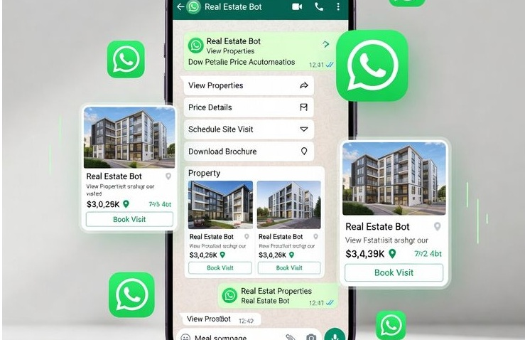
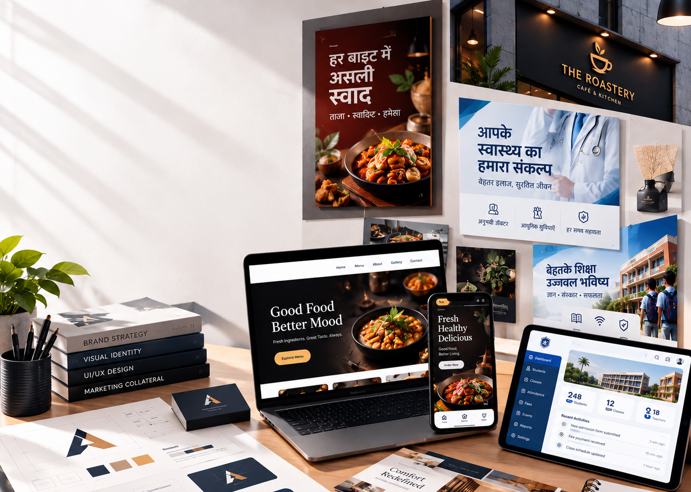

Building Scalable Software, Websites & Digital Products.
Logic without limits.
Custom Digital Architecture
We build high-performance websites, Applications, and automated ordering systems for growing businesses. Clean code, real results, and zero corporate fluff.
Scalable Web Platforms
High-performance websites custom-built on modern stacks (Next.js, React, Node.js, HTML5, CSS3). Lightning-fast loading speeds, absolute data security, and flawless user experiences that convert visitors into paying clients.
Online CBT Platforms
Secure, NTA-style Computer Based Test (CBT) platforms designed for local coaching institutes. Engineered with strict anti-cheat mechanisms, robust admin controls, and zero-latency interfaces to give your students a real exam-room experience.
Zero-Commission WhatsApp Ordering
Custom-engineered direct ordering systems for restaurants and retail brands. Eliminate 30% aggregator commissions with automated WhatsApp menus, instant customer receipts, and streamlined kitchen display systems.
What We Do
End-to-end digital craftsmanship — from concept to scale.

Website Development
Responsive, high-performance custom-built websites & secure backends tailored to convert local traffic into loyal customers.
App Development
High-performance Android & cross-platform native experiences for seamless mobile usage.

WhatsApp Business Automation
We build custom WhatsApp ordering and booking systems for any business.

Brand Identity
Designing unique, industry-grade logos, posters, and comprehensive brand guidelines.
Why Ambitious Businesses Choose VYOMARC
We replace complex corporate jargon with clean, high-performance software systems that grow your business.
Direct Founder Involvement
No corporate layers or junior staff. You work directly with Saurabh M. Kumar, our lead system architect.
Zero Per-Order Commissions
We eliminate expensive aggregator cuts and setup your platform on own micro-cloud server for just a basic, transparent hosting maintenance fee.
Premium UI/UX
Design-led development focused on conversion, retention, and flawless accessibility.
Conversational Automation
Turning complex processes into frictionless interactions, from automated WhatsApp catalogs and orders to instant digital billing for any business.
Featured Engineering Work
Real business impact driven by modern platforms and scalable web applications.

Institutional Web Platform
Deployed 7 days early, resulting in a +40% surge in verified admission inquiries.
Read Case Study
Premium Hospitality System
High-performance web application reliably scaling to handle 100+ daily active users.
Read Case Study
WhatsApp Ordering Systems
Fully automated digital ordering pipeline driving a +35% increase in direct D2C sales.
Read Case StudyAksar Pooche Jaane Waale Sawaal
Biharsharif, Nalanda, Muzaffarpur aur poore Bihar ke business owners ke sawalon ke jawab
Aur koi sawaal hai? Seedha poochho —
WhatsApp par PoochhoThe Engineering Lifecycle
A battle-tested methodology for shipping software that works.
Discovery
Architecture mapping & technical blueprinting.
Design
High-fidelity prototyping & UX validation.
Engineering
Strict agile coding, CI/CD & rigorous QA.
Deployment
Cloud launch, scaling & ongoing SLA support.
Client Success
Don't just take our word for it.
"Vyomarc delivered our institutional platform a week ahead of schedule. The code quality and UI are exceptional. It directly triggered a massive boost in our verified admission inquiries."
Rahul Kumar
Founder, J.M.S. Education Group
"An absolute masterclass in modern UI/UX and robust backend architecture. Our custom e-commerce platform handles thousands of simultaneous transactions flawlessly. 10/10 execution."
Satyam Kumar
Founder, VYNTRO Fashion
"They engineered a frictionless digital ordering system that allowed us to bypass third-party aggregators entirely, directly increasing our bottom-line profit margins and online sales."
Neha Verma
Owner, Street Cafe & Restaurant
Ready to engineer your next big idea?
Partner with us to build scalable, high-performance software.
Start the ConversationAreas We Serve: Bihar Sharif, Patna, Gaya, Muzaffarpur, Bhagalpur, Nalanda, Rajgir, and all over in North India.